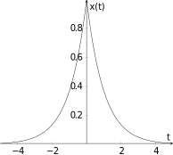

Lecture 9
Forward Laplace Transform
2025-09-11
In today’s lecture we introduce the Laplace Transform for CT signals and systems.
Forward Laplace Transform
Recall from ECE 2714 that the Eigenfunction for CT LTI systems is the input \(x(t) = e^{st}\) for \(s\in\mathbb{C}\). The resulting output, if it is defined, is given by
\[y(t) = x(t)*h(t) = H(s) e^{st}\]
where \(H(s)\) is the Eigenvalue associated with the Eigenfunction \(e^{st}\) for some fixed value of \(s\), and is the bilateral (two-sided) Laplace Transform of the impulse response
\[H(s) = \int\limits_{-\infty}^{\infty} h(t) e^{-st} dt \text{ for } s\in R \subseteq \mathbb{C}\]
The subset of the complex plane \(R\) is the set of values for \(s\) where the integral converges and the transform exists. We call this the region-of-convergence abbreviated ROC.
We can take the Laplace Transform of any signal, not just the impulse response. We introduce the notion, similar to the Fourier transforms that
\[\mathcal{L}_2\left\{ x(t) \right\} = X(s) \text{ or } x(t) \stackrel{\mathcal{L}_2}{\longrightarrow} X(s)\]
denotes the bilateral forward Laplace transform.
Examples
Lets now look at some illustrative examples.
Example 9.1: Let \(x(t) = e^{-at} u(t)\) for \(a\in\mathbb{R}\). Find \(X(s) = \mathcal{L}_2\left\{ x(t) \right\}\).
\[\begin{aligned} X(s) &= \int\limits_{-\infty}^{\infty} x(t) e^{-st} dt\\ &= \int\limits_{0}^{\infty} e^{-at} e^{-st} dt\\ &= \int\limits_{0}^{\infty} e^{-(s+a)t} dt\\ &= \left. \frac{-1}{s+a} e^{-(s+a)t} \right|_{0}^{\infty}\\ &= \frac{-1}{s+a} \left[\lim_{T\rightarrow \infty} e^{-(s+a)T} - e^{-(s+a)(0)} \right]\\ &= \frac{-1}{s+a} \left[\underbrace{0}_{\text{Re}(s) > -a} - 1\right]\\ &= \frac{1}{s+a} \text{ for Re}(s) > -a \end{aligned}\]
We can visualize the ROC as (shows \(a > 0\))
where there is a single pole (singularity) at \(-a\).
Note this result applies to any finite real \(a\), thus
\[\mathcal{L}_2\left\{ u(t) \right\} = \mathcal{L}_2\left\{ e^{-at} u(t) \right\}_{a = 0} = \frac{1}{s} \text{ for Re}(s) > 0\]
Lets compare the result in Example 9.1 to the CTFT.
\[\begin{aligned} X(j\omega) &= \int\limits_{-\infty}^{\infty} x(t) e^{-j\omega t} dt\\ &= \int\limits_{0}^{\infty} e^{-at} e^{-j\omega t} dt\\ &= \int\limits_{0}^{\infty} e^{-(j\omega+a)t} dt\\ &= \left. \frac{-1}{j\omega+a} e^{-(j\omega+a)t} \right|_{0}^{\infty}\\ &= \frac{-1}{j\omega+a} \left[\lim_{T\rightarrow \infty} e^{-(j\omega+a)T} - e^{-(j\omega+a)(0)} \right]\\ &= \frac{-1}{j\omega+a} \left[\underbrace{0}_{a > 0} - 1\right]\\ &= \frac{1}{j\omega+a} \text{ for } a > 0 \end{aligned}\]
It only converges for \(a > 0\). Having a real part to \(s\) allows us to force the integral to converge (within limits) with the ROC defining the values that do so. \(\blacksquare\)
Recall that the CTFT will exist if
\[\int\limits_{-\infty}^{\infty}\left| x(t) \right| dt < \infty\]
When will the Laplace Transform exist? If
\[\int\limits_{-\infty}^{\infty}\left| x(t)e^{ct} \right| dt < \infty\]
for some real \(c\). If \(x(t)\) grows as \(t\rightarrow \infty\), then \(e^{ct}\) can counter that growth. There are functions for which this is not possible, e.g. \(x(t) = t^t\), because it grows too fast.
Example 9.2: Non-causal pulse \(x(t) = u(t+1) - u(t-1)\).
\[\begin{aligned} X(s) &= \int\limits_{-\infty}^{\infty} x(t) e^{-st} dt\\ &= \int\limits_{1}^{1} e^{-st} dt\\ &= \left. \frac{-1}{s} e^{-st} \right|_{-1}^{1}\\ &= \frac{1}{s} \left[e^{s} - e^{-s} \right] \text{ for all } s \in\mathbb{C} \end{aligned}\]
Note: The Laplace transform of a finite-length signal where
\[\int\limits_{L}^{U}\left| x(t)e^{ct} \right| dt < \infty\] and \(L,U\) are the bounds outside which the signal is zero, will always exist with the ROC being the entire complex plane.
Example 9.3: \(x(t) = e^{-t}u(t) = e^{-2t}u(t)\)
\[\begin{aligned} X(s) &= \int\limits_{-\infty}^{\infty} x(t) e^{-st} dt\\ &= \int\limits_{0}^{\infty} e^{-t} e^{-st} dt - \int\limits_{0}^{\infty} e^{-2t} e^{-st} dt\\ &= \underbrace{\frac{1}{s+1}}_{R_1 \equiv \text{Re}(s) > -1} - \underbrace{\frac{1}{s+2}}_{R_2 \equiv \text{Re}(s) > -2}\\ &= \frac{s+2 - s - 1}{(s+1)(s+2)} \text{ for ROC } R_1 \cap R_2 = \text{Re}(s) > -1\\ &= \frac{1}{s^2 + 3s + 2} \text{ for } \text{Re}(s) > -1 \end{aligned}\]
Since the integral must hold for both terms the ROC is the intersection of the two sets \(R_1\) and \(R_2\), thus the ROC is defined by the more restrictive of the two. This extends to transforms with an arbitrary number of terms.
Note: when the signal is causal, for example the impulse response of a causal system, the transform integral is zero for \(t < 0\) and the Laplace transform becomes unilateral (one-sided, usually denoted without a subscript)
\[\mathcal{L}_1\left\{ x(t) \right\} = \mathcal{L}\left\{ x(t) \right\} = X(s) \text{ or } x(t) \stackrel{\mathcal{L}}{\longrightarrow} X(s)\]
where
\[X(s) = \int\limits_{0}^{\infty} x(t) e^{-st} dt\]
and the ROC is the region of the complex plane to the right of some constant.
When dealing only with causal signals (causal systems with causal inputs) explicitly treating the ROC is not required. This is the easiest case of analysis, and a common one. However, if either the impulse response or the input is non-causal, the unilateral Laplace does not apply and careful attention should be paid to the ROC.
Example 9.4: \(x(t) = e^{-|t|}\). Note this signal is non-causal and infinite in extent and can be written as a piece-wise function
\[x(t) = \left\{ \begin{array}{cc} e^t & t < 0\\ 1 & t = 0\\ e^{-t} & t > 0 \end{array} \right.\]

\[\begin{aligned} X(s) &= \int\limits_{-\infty}^{\infty} x(t) e^{-st} dt\\ &= \int\limits_{-\infty}^{0} e^{t} e^{-st} dt + \int\limits_{0}^{\infty} e^{-t} e^{-st} dt\\ &= \int\limits_{-\infty}^{0} e^{-(s-1)t} dt + \int\limits_{0}^{\infty} e^{-(s+1)t} dt\\ &= \left. \frac{-1}{s-1} e^{-(s-1)t} \right|_{-\infty}^{0} + \left. \frac{-1}{s+1} e^{-(s+1)t} \right|_{0}^{\infty}\\ &= \frac{-1}{s-1} \left[e^{-(s+1)(0)} - \lim_{T\rightarrow \infty} e^{-(s-1)T} \right] + \frac{-1}{s+1} \left[\lim_{T\rightarrow \infty} e^{-(s+1)T} - e^{-(s+1)(0)} \right]\\ &= \frac{-1}{s-1} \left[1 - \underbrace{0}_{\text{Re}(s) < 1} \right] + \frac{-1}{s+1} \left[\underbrace{0}_{\text{Re}(s) > -1} - 1 \right]\\ &= \underbrace{\frac{-1}{s-1}}_{\text{Re}(s) < 1} + \underbrace{\frac{-1}{s+1}}_{\text{Re}(s) > -1} \end{aligned}\]
The first term corresponds to the anti-causal part of the signal and has an ROC that it to the left of a real constant (+1). The second term corresponds to the causal part of the signal and has an ROC that it to the right of a real constant (-1). The overall ROC is the intersection, or the strip between -1 and 1:
Note if we combine the expressions
\[X(s) = \frac{-1}{s-1} + \frac{1}{s+1} = \frac{-2}{s^2 - 1} \text{ for } -1 < \text{Re}(s) < 1\] we lose the distinction between the anti-causal and causal components, which is why the ROC needs to be kept in those cases. We will see example where this is important in lecture 13.
A few more examples.
Example 9.5: \(x(t) = \delta(t)\).
\[\begin{aligned} X(s) &= \int\limits_{-\infty}^{\infty} x(t) e^{-st} dt\\ &= \int\limits_{-\infty}^{\infty} \delta(t) e^{-st} dt\\ &= e^{-s(0)} = 1\text{ for } s\in\mathbb{C} \end{aligned}\]
Example 9.6: \(x(t) = e^{j\omega t}\).
\[\begin{aligned} X(s) &= \int\limits_{-\infty}^{\infty} x(t) e^{-st} dt\\ &= \int\limits_{-\infty}^{\infty} e^{j\omega t} e^{-st} dt\\ &= \int\limits_{-\infty}^{\infty} e^{-(s-j\omega)t} dt\\ &= \frac{-1}{s-j\omega} \left. e^{-(s-j\omega)t} \right|_{-\infty}^{\infty}\\ &= \frac{-1}{s-j\omega} \left[ \lim_{T\rightarrow \infty} e^{-(s-j\omega)T} - \lim_{T\rightarrow -\infty} e^{-(s-j\omega)T} \right] \end{aligned}\]
The first limit will converge to zero if and only if
\[\begin{aligned} \text{Re}(s-j\omega) &> 0\\ \text{Re}(s) &> 0\\ \end{aligned}\]
The second limit will converge to zero if and only if
\[\begin{aligned} \text{Re}(s-j\omega) &< 0\\ \text{Re}(s) &< 0\\ \end{aligned}\]
These two conditions are mutually exclusive so it appears the transform does not exist. However, consider the edge case when the \(\text{Re}(s) = 0\). Then the Laplace transform becomes equivalent to the Fourier Transform and
\[\mathcal{L}\left\{e^{j\omega t}\right\} = \frac{1}{2\pi} \delta(s - \omega) \text{ for Re}(s) = 0\]
Example 9.7: Compare the previous example to \(x(t) = e^{j\omega t}u(t)\).
\[\begin{aligned} X(s) &= \int\limits_{-\infty}^{\infty} x(t) e^{-st} dt\\ &= \int\limits_{0}^{\infty} e^{j\omega t} e^{-st} dt\\ &= \int\limits_{0}^{\infty} e^{-(s-j\omega)t} dt\\ &= \frac{-1}{s-j\omega} \left. e^{-(s-j\omega)t} \right|_{0}^{\infty}\\ &= \frac{-1}{s-j\omega} \left[ \lim_{T\rightarrow \infty} e^{-(s-j\omega)T} - 1 \right] \end{aligned}\]
The limit will converge to zero if
\[\begin{aligned} \text{Re}(s-j\omega) &> 0\\ \text{Re}(s) &> 0\\ \end{aligned}\]
Thus,
\[\mathcal{L}\left\{e^{j\omega t}u(t)\right\} = \frac{1}{s-j\omega} \text{ for Re}(s) > 0\]
Example 9.6: \(x(t) = \cos(\omega t)u(t)\).
First, write the cosine using Euler’s identity \[x(t) = \frac{1}{2}e^{j\omega t} + \frac{1}{2}e^{-j\omega t}\]
Similar to the previous example then
\[\begin{aligned} X(s) &= \int\limits_{-\infty}^{\infty} x(t) e^{-st} dt\\ &= \int\limits_{0}^{\infty} \frac{1}{2}e^{j\omega t} e^{-st} dt + \int\limits_{0}^{\infty} \frac{1}{2}e^{-j\omega t} e^{-st}\\ &= \int\limits_{0}^{\infty} \frac{1}{2}e^{-(s-j\omega)t} dt + \int\limits_{0}^{\infty} \frac{1}{2}e^{-(s+j\omega)t} dt\\ &= \frac{1}{2} \left[ \frac{1}{s-j\omega} + \frac{1}{s+j\omega}\right] \text{ for Re}(s) > 0\\ &= \frac{s}{s^2 + \omega^2} \text{ for Re}(s) > 0 \end{aligned}\]
Note the examples thus far cover many of the cases we are interested in
| \(x(t)\) | \(X(s)\) | ROC |
|---|---|---|
| \(\delta(t)\) | 1 | \(s\in\mathbb{C}\) |
| \(u(t)\) | \(\frac{1}{s}\) | \(\text{Re}(s) > 0\) |
| \(e^{-at}u(t)\), \(a\in\mathbb{R}\) | \(\frac{1}{s+a}\) | \(\text{Re}(s) > -a\) |
| \(\cos(\omega t)u(t)\), \(\omega\in\mathbb{R}\) | \(\frac{s}{s^2 + \omega^2}\) | \(\text{Re}(s) > 0\) |
| \(\sin(\omega t)u(t)\) | ? | ? |
| \(e^{-at}\cos(\omega t)u(t)\), \(a,\omega\in\mathbb{R}\) | ? | ? |
The problem set for this week has you derive the last two rows of the above table.